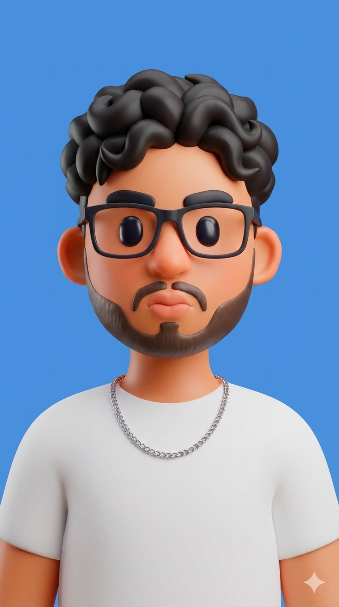

Conoce al Equipo
Estudiantes de Ingeniería de Software apasionados por las telecomunicaciones.
Jahir
Desarrollo Full Stack & LógicaImplementación del núcleo de simulación JavaScript, integración de componentes y coordinación general del desarrollo técnico.

Edwin
Arquitectura & Diseño UIDiseño de la interfaz de usuario, maquetación CSS y estructuración de la lógica para la visualización de datos en tiempo real.
Aleks
Investigación & DesarrolloAnálisis de algoritmos de multiplexación, validación de escenarios síncronos/asíncronos y codificación de funcionalidades.